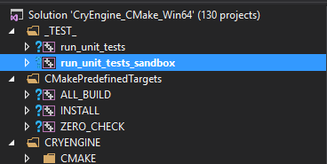
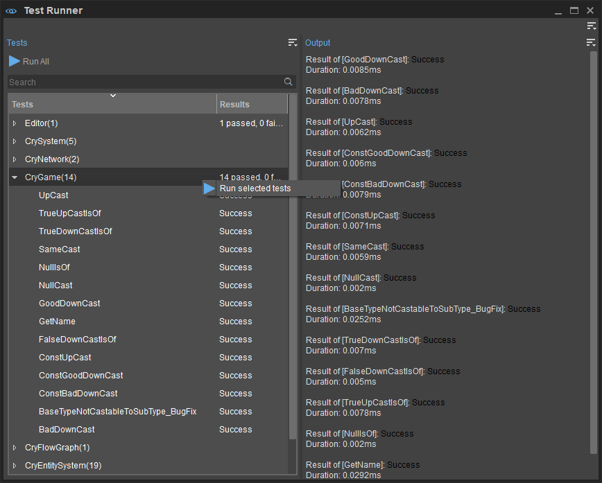
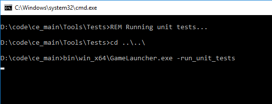

Обзор
CryTest — это среда тестирования функций, предназначенная для больших и сложных тестовых случаев в CRYENGINE.
Функциональные тесты можно писать прямо вместе с тестируемым кодом или в отдельном исходном файле. Основные интерфейсы определены в CryTest.h заголовок. Под капотом тестовые экземпляры представляют собой глобальные переменные, которые автоматически регистрируются, то есть они должны находиться только в .cpp файлы и не заголовки.
Создание простого теста
Простые тесты — это те, которые завершают тест внутри вызова функции. Определить простой тест так же просто, как поместить все процедуры в область действия функции CRY_TEST. Когда среда тестирования выполняет тест, она блокирует основной поток до завершения теста; вызов трудоемкой функции из теста все еще возможен, но движок — игра или редактор — будет заблокирован на это время.
// This is a test case
CRY_TEST(YourTestNameHere)
{
// you can use test asserts here, e.g. CRY_TEST_ASSERT
}
// Optionally, it's possible to group similar tests together
CRY_TEST_SUITE(YourTestSuiteNameHere)
{
CRY_TEST(YourTestNameHere1)
{
}
CRY_TEST(YourTestNameHere2)
{
}
//and more...
}Создание функционального теста
Команды
Ключевой концепцией тестирования функций является первый ожидание, пока другие части программы обновят свои состояния, а затем проверка этих состояний. Чтобы сделать это без каких-либо блокировок, тестовые команды для проверки функций можно поставить в очередь вместо немедленного выполнения этих команд.
Минималистичный пример выглядит следующим образом:
void ShowConsole
{
gEnv->pConsole->ShowConsole(true);
}
void HideConsole()
{
gEnv->pConsole->ShowConsole(false);
}
CRY_TEST(ConsoleOpenCloseTest)
{
commands =
{
ShowConsole,
CryTest::CCommandWait(1.f),
[] {
CRY_TEST_ASSERT(gEnv->pConsole->IsOpened());
},
CryTest::CCommandWait(1.f),
HideConsole,
CryTest::CCommandWait(1.f),
[] {
CRY_TEST_ASSERT(!gEnv->pConsole->IsOpened());
}
};
}Команды представляют собой коллекцию CCommand, то есть базовый тип любой команды. CCommand не является базовым классом этих команд, а является контейнером со стертым типом любого класса, реализующего эти методы:
class CMyCommand
{
public:
//! The main loop to trigger the command's work. Must not block in the function. Returns true when the command is done.
//! The function is required for converting the object to CCommand.
bool Update();
//! Returns additional commands to be run after this one is done. The new commands are inserted to the front of queue.
//! The function is optional for converting the object to CCommand.
std::vector<CCommand> GetSubCommands() const;
};Обратите внимание, что только функция Обновление() требуется, тогда как GetSubCommands() можно опустить, если в этом нет необходимости.
- CCommand принимает свободные функции и лямбды.
- Функции-члены могут быть преобразованы в CCommand используя CCommandFunctionили лямбда с захватом.
- В тестовую среду входит несколько предопределенные классы команд в CryTestCommands.h, содержащий одну из самых важных команд - CCommandWait.
Атрибуты
Тот же тест в вышеупомянутом примере может быть расширен некоторыми важными атрибутами, которые указывают, когда и где тест должен выполняться.
Атрибуты на самом деле являются членами класса CTestFactory; перейдите к символу из имени атрибута, чтобы узнать о нем больше.
CRY_TEST(ConsoleOpenCloseTest, timeout = 60.f, game = true, editor = false)
{ /* ... */ }- игра (bool) - Определяет, следует ли выполнять тест для игрового проекта. Для получения дополнительной информации, пожалуйста, обратитесь к Тестовый бегун справочная страница.
- редактор (bool) - Определяет, следует ли выполнять тест для редактора.
- таймаут (float) - Указывает ограничение времени в секундах, которое тест не должен превышать. Тесты с истекшим временем ожидания завершатся неудачно и отобразятся тайм-аут как причина.
Запуск тестов
В настоящее время существует 4 способа выполнения тестов для локальной сборки движка.
1. Запуск тестовой цели из Visual Studio (решение CRYENGINE)
Первый вариант — запустить цели непосредственно в решении CryEngine, которое является либо игровым проектом, либо самим Sandbox.
Запустите новый экземпляр отладки или установите его в качестве запускаемого проекта. Он внутренне запускает программу запуска игры с параметром командной строки: run_unit_tests.
Аналогично, существует тестовый пакетный файл для игры и Sandbox для каждой платформы, который можно найти в Инструменты\Тесты\Test_RunUnitTests_*.cmd.

Запуск тестов из обозревателя решений
2. Использование Test Runner на CRYENGINE Sandbox
Предпочтительным способом запуска тестов для разработчиков игр должен быть Тестовый бегун инструмент, который можно найти в меню Sandbox на Инструменты → Дополнительно → Средство запуска тестов.
С помощью Test Runner вы можете:
- Запустите все тесты, введенные в инструмент;
- Запустите определенный тест или категорию тестов.
Обратите внимание: когда тест завершается сбоем или зависает, он неизбежно завершает работу или зависает и Sandbox. Рекомендуется писать тестовый код «защитно», т.е. проверять наличие нулей.

Тестовый бегун
3. Запустите тестовый пакетный файл (Tools\Tests\Test_RunUnitTests*.cmd)

4. Консольная команда «CryTest»
Последний вариант — использовать консольную команду CryTest на внутриигровой консоли или консоли редактора.
Команда поддерживает автозаполнение, то есть если вы нажмете Вкладка после CryTest, он отобразит список допустимых тестовых случаев.